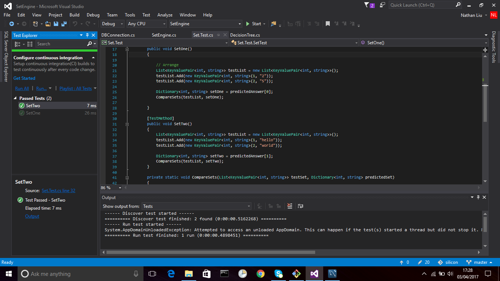

We have run several speed tests including reading data from different resources, generating chart
graphs in front-end and back-end, and so on. Below are the results we got from the speed tests.
Some terminology
Random Sample: The random sample with a scalar is a method where we randomly select 1000 samples
and send this to the front end along with a scalar multiple so the number can be multiplied back
up to the real set.
JSON Splitting: This is where we split the string with delimiters and count the
resulting array. It happens to be the size of the set.
Dictionary Size: This is the value of parsing the JSON
string into a Dictionary Object and returning the size of the Dictionary.
Other Information
We were unable to obtain results from UDP but from research
we managed to find that UDP/TCP
speeds were fairly similar. The data is also shown in Figure 5.
Figure 1: Time to generate charts using different methods against a database on
the
local machine.
Figure 2: Time to generate charts using different methods against the Azure
blob before introduction of storing set sizes.
Figure 3: Time to retrieve a set against the Azure blob using different
methods.
Figure 4: Time comparison between Azure Blob and a local database using JSON
splitting.
Figure 5: Time comparison between TCP and UDP.
Unit Tests
Set Engine
Due to the complexity of some of the functions in the Set Engine it was a bit difficult to
create
automated tests for the Set Engine. (e.g. some processes upload data to the blob which
should not
happen during a test). To overcome this problem we simply added an optimal test parameter to
the Set
Engine which when called will put the Set Engine into test mode.

Figure 6: Screen shot showing unit tests being run on the Set Engine.
When in test mode the Set Engine reads from a Test Database and the output is tested against
a set of
known output sets by
calling the CompareSets(TestSet, PredictedSet) function where 'TestSet' is the answer and
'PredictedSet' is the set generated by the Set Engine. Every single item in the Test and
Predicted
Set must match in order for the unit test to pass.
REST API
For the REST API we created a series of test for each controller to test against expected and
actual I/O. We retrieved the set in JSON and checked if the set was empty. If the set was
empty then the test case will fail.
Figure 7: Sample Unit Test for API Controller
Compatibility Testing
The Set Engine is meant to work with any relational database without knowing the structure of the
database. In order to test this out we decided to run the Set engine against several different mock
databases we created.
After running the Set Engine on this database we observed the following database
structure on
the blob. Note that the green icons are sets that can retrieved by front end developers. The
cloud icons (leaf nodes on the tree) are an abstraction of the multiple subsets resulting
from the parent set (the non-leaf node that is green). Each parent set can have up to
hundreds of sub sets hence the cloud icon to represent multiple sets.
Figure 9: Output structure of the Set Engine on airline company mock database.
Slightly more complex database of a hotel chain (Figure 9)
Figure 10: Database schema of a mock hotel chain.
This database is slightly more complex than the airliner database we made. The hotel
chain
database contains foreign keys that are usually used for one-to-many mappings, one-to-one
mappings and many-to-many mappings.
Figure 11: Output structure of Set Engine after a run on the mock hotel chain
database.
Mock school management database (Figure 12)
Figure 12: Database of school management system.
Last but not least we had run our Set Engine against the main school database that we
were
working with. The resulting Blob structure shown in Figure 13.
Figure 13: Structure of the set database created by the Set Engine after a run on a mock
school management database.
User Testing
Methodology
The main people using the Web API will be front end developers
As a result we decided to ask
several computer science students including members from Team 1 whom we were working closely with to
review several API calls on postcode.io and then obtain
feedback regarding their experience. This was because postcode.io had roughly what we had in mind
and asking users what they liked about it would greatly help us find the best way to make our API as
friendly as possible
Some students had not used the REST API before so we
guided them on usage. We decided to conduct an open discussion session while the user used the API
as we believed that receiving
feedback while the user was using the product would be the most realistic feedback as it would
reflect closely to what developers were thinking while they were using the API.
Conclusion
We found that users found it easy to call REST requests from the address bar in their web browser.
More inexperienced users of REST APIs showed more interest in the URI approach whereas a handful of
experienced users used REST tools including Postman to call the REST requests. As a result we
decided to opt for the URI approach as this would be the easiest for beginners to learn.